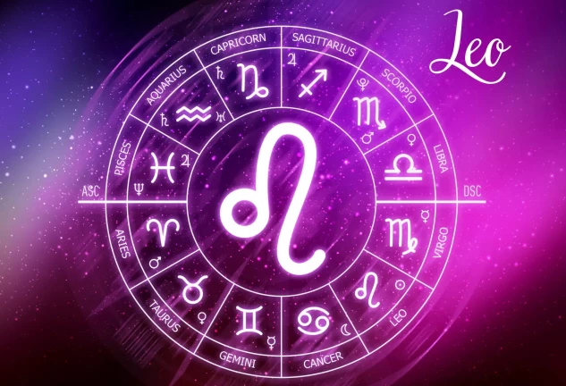
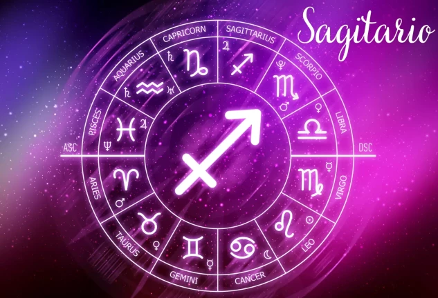

En astrología, Aries es el primer signo del zodíaco, el primero
de naturaleza positiva o masculina y de cualidad cardinal.
Simboliza la energía y la fuerza, y su símbolo representa el
carnero. Pertenece junto a Leo y Sagitario al elemento fuego.
Está regido por el planeta Marte.
Tradicionalmente, Aries se asocia con una energía optimista,
iniciativa y entusiasmo. También se relaciona con la
impulsividad y la impaciencia, características que pueden
equilibrarse mediante la reflexión y la comunicación.

En astrología, Leo es el quinto signo del zodíaco, el tercero
de naturaleza positiva y el segundo de cualidad fija.
Simboliza la fuerza de la vida y su símbolo representa la
melena del león. Pertenece junto a Aries y Sagitario al
elemento fuego. Está regido por el Sol. Su signo opuesto
y complementario es Acuario.
Leo se relaciona tradicionalmente con el entusiasmo,
la creatividad y la confianza. También se asocia con el
gusto por la aventura, los desafíos y las experiencias nuevas.

En astrología, Sagitario es el noveno signo del zodíaco,
de naturaleza positiva y de cualidad mutable, representado
por un centauro arquero. Simboliza la conciencia superior
y su símbolo representa la flecha del arquero. Pertenece,
junto a Aries y Leo, al elemento fuego. Está regido por Júpiter.
Sagitario se asocia tradicionalmente con la sinceridad,
el optimismo y el entusiasmo por descubrir nuevas experiencias.
También se relaciona con la independencia y el deseo de
alcanzar sus objetivos.